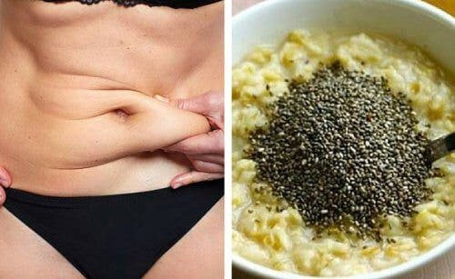
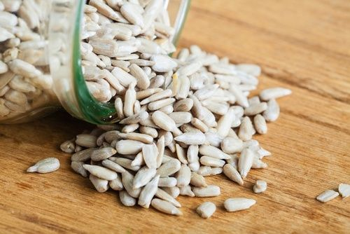

Semi di chia | bulk™
2021.01.31 12:24
Pronto per un nuovo inizio? Noi lo siamo di sicuro. Scopri il nuovo bulk™
Seleziona una lingua
Accedi Oppure Registrati Menu OFFERTE PROTEINE Proteine del Siero del Latte Proteine di Manzo Senza aggiunta di latticini Proteine Dietetiche Proteine delle Uova Proteine Senza Glutine Alimenti Proteici Proteine Informed Sport Proteine Senza Lattosio Mass Gainers Proteine del Latte Proteine Naturali Proteine Paleo Barrette Proteiche Miscela di Proteine Campioni di Proteine Smoothies Proteici Snack Proteici Proteine per Recupero Proteine Rilascio Lento Proteine Neutre Proteine Vegane
protein types
All Protein Proteine del Siero del Latte Proteine di Manzo Nessuna Proteina Da Latte Aggiunta Proteine Dietetiche Proteine delle Uova Proteine Senza Glutine Proteine Informed Sport Proteine Senza Lattosio Proteine del Latte Proteine Naturali Proteine Paleo Proteine per Recupero Proteine Rilascio Lento Proteine Neutre Proteine Vegane Proteine Vegetarianeprotein products
Alimenti Barrette Proteiche Miscela di Proteine Campioni di Proteine Smoothies Proteici Snack Proteici Mass GainersDi tendenza
Pure Whey Protein
10,99 €Barretta proteica Macro Munch™
2,99 € Vitamine Alimentazione Sportiva Integratori All in One Aminoacidi Arginina BCAA Carnitina EAA Supplementi di HMB Glutammina Altri Aminoacidi Carboidrati Carboidrati a rilascio rapido Carboidrati a rilascio lento Creatina Resistenza & Idratazione Informed Sport Intra Allenamento Benessere delle Articolazioni Stimolatori Maschili Post Allenamento Aminoacidi in Polvere Carboidrati in Polvere Crescita Muscolare & Recupero Proteine Liquide Pre Allenamento Energia & Rendimento Concentrazione mentale Ossido Nitrico & Pump Integratori per l aumento di pesoAlimentazione Sportiva
Integratori All in One Creatina Resistenza & Idratazione Informed Sport Intra Allenamento Benessere delle Articolazioni Stimolatori MaschiliAminoacidi
Arginina BCAA Carnitina EAA HMB GlutamminaCarboidrati
Carboidrati a rilascio rapido Carboidrati a rilascio lentoPost Allenamento
Aminoacidi in Polvere Carboidrati in Polvere Crescita Muscolare & Recupero Proteine LiquidePre Allenamento
Energia & Rendimento Concentrazione mentale Ossido Nitrico & PumpACCESSORI & ABBIGLIAMENTO
Bottiglie e Shaker Accessori per Palestra Borse e Zaini Capsule vuoteDi tendenza
Elevate Pre Workout
47,99 €BCAA istantanei in polvere
9,99 € Salute e Benessere Multivitaminici Vitamine & Minerali Anti-invecchiamento Anti-infiammatorio Antiossidanti Coadiuvanti della digestione Acidi Grassi Essenziali Oli di Pesce Frutta & Verdura Integratori Vegetali Capelli , Pelle e Unghie Salute del cuore Integratori Ricchi di Fibre Integratori per Sistema Immunitario Integratori per le Articolazioni Supporto maschile Salute del Fegato Miglioramento Cognitivo & Umore Omega 3 Polveri Organiche Probiotici Salute della Prostata Miglioramento del Sonno Super Alimenti in PolvereSalute e Benessere
Multivitaminici Vitamine & Minerali Antiossidanti Coadiuvanti della digestione Acidi Grassi Essenziali Oli di Pesce Frutta & Verdura Integratori Vegetali Capelli, Pelle e Unghie Salute del cuore Integratori Ricchi di Fibre Integratori per Sistema Immunitario Integratori per le Articolazioni Stimolanti della Libido Salute del Fegato Miglioramento Cognitivo & Umore Omega 3 Polveri Organiche Probiotici Super alimenti in PolvereDi tendenza
Complesso multivitaminico completo
17,49 €Vitamina D3 Compresse da 100μg (4000IU)UI
6,99 € Perdita di Peso Brucia Grassi Frullati Dietetici Alimenti con poche calorie Pacchetti per la Perdita di PesoPerdita di Peso
Brucia Grassi Frullati Dietetici Alimenti con poche calorie Pacchetti per la Perdita di PesoDi tendenza
Cutting Edge™
47,99 €Proteine dietetiche complete AVANZATE
17,49 € Alimenti Burro di Frutta Secca Arachidi Mandorle Anacardi Nocciole Pistacchio Barrette Ingredienti per Cucina Snack di Manzo Colazione Pasto Libero Semi di Chia Cocco Frutta Secca Bibite & Bevande Albume d Uovo Snack di Pesce Aromatizzanti & Dolcificanti Farina Oli Salutari Glucomannano Di Lunga Durata Snack di Carne Semi e Frutta Secca Cibi Biologici Snack Proteici Super alimenti Alimenti Zero CalorieAlimenti
Barrette Ingredienti per Dolci Snack di Manzo Colazione Pasto Libero Chia Cocco Frutta Secca Bibite & Bevande Di Lunga Durata Albume d'Uovo Snack di Pesce Aromatizzanti & Dolcificanti Farina Oli Salutari Glucomannano Snack di Carne Frutta Secca & Semi Cibi Biologici Snack Proteici Super alimenti Alimenti Zero CalorieBurro di Frutta Secca
Arachidi Mandorle Anacardi Nocciole PistacchioDi tendenza
Mix per Pancake Proteici
12,99 €Sciroppi senza calorie
5,49 € ACQUISTA PER SERIE Performance Health & Wellbeing Foods PRO MACRO MUNCH™ Vegan Accessories bulk™ performance bulk™ health & wellbeing bulk™ pro bulk™ vegan bulk™ foods macro munch™ bulk™ accessories Blog Il mio Conto Disconetti Italia Europe Danmark España France Ireland Nederland Österreich Polska Portugal Sverige Deutschland United Kingdom România Česká republika Schweiz Account Consegna Gratuita per ordini superiori a 20€* Vasta Gamma 1200+ prodotti Utilizzo L’obiettivo USO & PRODOTTI SINERGICI Informazioni nutrizionali Recensioni Ricchi di proteine e omega-3 Fonte ideale di fibre alimentari Fonte alimentare integrale, priva di glutineSemi di chia
Semi di chia di alta qualità provenienti dal Sudamerica. Ricchi di proteine, pieni di gusto e grande fonte di fibre alimentari.
I nostri semi di chia nel formato da 100 g contengono 20 g di proteine e 38 g di fibre alimentari, un'ottima fonte di cibo integrale e di contenuto nutrizionale. Inoltre sono una grande fonte di acidi grassi Omega e degli 8 aminoacidi essenziali, fornendo così una grande carica nutritiva in un piccolo formato.
Provenienti dalle coltivazioni di Salvia hispanica del Messico e del Guatemala, i nostri semi di chia sono la soluzione ideale per incrementare il contenuto nutrizionale di altri cibi, come il porridge o i frullati, o per fare scorta di proteine tra un pasto e l'altro e gustarli come un semplice e delizioso snack. I semi di chia sono inoltre una grande fonte di acidi grassi Omega 3, 6 e 9.
Dichiarazione di non responsabilità : i risultati effettivi possono variare. Ciascun individuo reagisce in modo diverso. I risultati attesi presuppongono un adeguato programma nutrizionale e di allenamento.L’obiettivo
I nostri semi di chia sono un prodotto di prima qualità e una grande fonte di proteine, ideali per chi desidera aumentare il contenuto nutrizionale di altri pasti o concedersi uno snack sano. Mescolati con l'acqua si trasformano in un'ottima bevanda da assumere durante l'allenamento.
Uso
Il consumo dei Semi di chia è autolimitante, quindi si consiglia di utilizzarli in base alle proprie esigenze nutritive.
Prodotti sinergici
Non esistono prodotti sinergici diretti dei Semi di chia, ma consigliamo di spargerli su porridge (preferibilmente a base di Avena istantanea ) o cereali oppure di aggiungerli al proprio integratore di proteine preferito per migliorarne la consistenza e il valore nutritivo.
Contenuto nutrizionale
(Valori misurati per ogni porzione da 25 g) Proteine: 5 g Fibre: 9,5 g Grassi: 7,8 gI benefici
Valore incredibile Alta qualità e alimentazione naturale a un prezzo contenuto. Alto contenuto proteico Con 20 g di proteine per 100 g, i nostri semi di chia sono un modo semplice per aggiungere proteine extra alla dieta. Tutti gli aminoacidi essenziali Contiene tutti gli 8 aminoacidi essenziali di cui il tuo organismo ha bisogno per mantenere la massa muscolare. Ricco di fibre 10 g di fibre per 25 g per sostenere la salute digestiva.Ingredienti dei Semi di chia
Semi di chia al 100%.
Informazioni nutrizionali sui Semi di chia
Per porzione di 25 g:
Valore energetico 456/109 kJ/kcal, carboidrati 0,5 g, (di cui zuccheri) 0 g, proteine 5 g, grassi 7,75 g, (di cui saturi) 0,75 g, fibre alimentari 9,48 g, sale 0 g.
Per porzione di 100 g:
Valore energetico 1825/436 kJ/kcal, carboidrati 2 g, (di cui zuccheri) 0 g, proteine 20 g, grassi 31 g, (di cui saturi) 3 g, fibre alimentari 37,9 g, sale 0 g.
Adatto a
Vegani e vegetariani.
Allergeni
Nessuno.
Read more...
Semi di chia
A partire da 6,99 € SKU BPF-CHIA Disponibile SKU BPF-CHIA A partire da 6,99 € vegetariani vegani halal ... Aggiungi per confrontareProdotti consigliati
Continua gli acquisti Procedi all'acquistoRecensioni utente
Customer Reviews Subtitle
#This is Nutrition
Condividi il tuo percorso su Instagram @bulk
Iscrivetevi alla newsletter
Vi piacerebbe ricevere sconti e consigli sul fitness direttamente via email? Sapete cosa fare.
consegna gratuita
Consegna gratuita con ordini superiori a 50€ Di piu'Invita un amico
Vi piacerebbe un buono da €10? Potra' essere vostro, semplicemente invitando un amico su bulk™️ . Di piu'This is Nutrition
Nuovo look, stessa incredibile qualità, rendimento e gusto. SCOPRI DI PIÙEsclusivo Studenti
Ricevi il 25% di sconto Di piu' 800986553 Dal lunedì al venerdì: 09:00 - 18:00. Chiuso nel weekend e nei giorni festivi UK Contattaci Chi siamo Informazioni sulla Consegna Programma di Affiliazione Termini & Condizioni di Vendita · Informativa sulla Privacy · Mappa del sito © Copyright bulk™️ . Tutti i diritti sono riservati. ContinueSkip to the beginning of the images gallery
- Semi di chia: benefici e controindicazioni - Benessere 360
- 11 benefici dei semi di Chia per la salute
- Semi di chia | bulk™
- Semi di chia - Proprietà e benefici - Albanesi.it
- 80+ idee su Semi di chia | chia, semi di chia, ricette
- Semi di chia - Cure-Naturali.it
- Semi di chia: 10 idee per integrarli nella vostra ...
- Compra Online Semi di Chia Bio - Ricchi di proteine e per ...
- Semi di chia: proprietà e benefici per sangue e intestino ...
- Semi di Chia: proprietà, uso, controindicazioni e dove ...
- Semi di chia: benefici e controindicazioni - Benessere 360
Semi di chia: alimentazione. Questi semi possono essere consumati crudi, aggiunti a yogurt, zuppe o vellutate, oppure possono essere utilizzati per preparare ricette dolci o ricette salate. Si può realizzare la farina, oppure il gel, che ha un ottimo potere addensante e che può sostituire anche le uova per un’alternativa vegana.
- 11 benefici dei semi di Chia per la salute
Bevanda energizzante ai semi di chia 07/07/2018. Bevanda energizzante ai semi di chia Questa bevanda energizzante ai semi di chia oltre ad essere buona e rinfrescante, vanta mille proprietà: è detox, energizzante, antiossidante, idratante, favorisce la perdita di peso, riduce l’appetito, migliora la digestione e aumenta le prestazioni dell’allenamento.
- Semi di chia | bulk™
Semi di chia in cucina; I semi di chia sono originari del Messico e del Guatemala e rappresentavano un alimento base per gli antichi Aztechi e Maya. Sono ricchi di nutrienti e proprietà. Vediamone alcune! Valori nutrizionali . 100 g di semi di chia contengono. 534 kcal; proteine 18,3 g; grassi 42,1 g; grassi saturi 3,6 g; carboidrati 28,8 g; zuccheri 1,5 g;
- Semi di chia - Proprietà e benefici - Albanesi.it
Semi di chia proprietà. Ricchi di numerosi nutrienti: proteine, lipidi, carboidrati, fibre vegetali e antiossidanti naturali, contengono anche acidi grassi essenziali come omega 3 (8 volte la quantità contenuta nel salmone), che consente di abbassare la quantità di colesterolo cattivo nel sangue e aumentare quello buono.. In ogni seme ci sono tutti gli amminoacidi essenziali al buon ...
- 80+ idee su Semi di chia | chia, semi di chia, ricette
I semi di Chia sono piccoli semi neri provenienti dalla pianta Salvia Hispanica, che appartiene alla stessa famiglia della menta.. Questa pianta è originaria del Sud America. I semi di Chia sono apprezzati soprattutto per la loro capacità di fornire energia.. Infatti “chia” è un’antica parola Maya che significa “forza”. Nonostante la loro storia così antica, solo di recente i ...
- Semi di chia - Cure-Naturali.it
Semi di chia. Semi di chia di alta qualità provenienti dal Sudamerica. Ricchi di proteine, pieni di gusto e grande fonte di fibre alimentari. I nostri semi di chia nel formato da 100 g contengono 20 g di proteine e 38 g di fibre alimentari, un'ottima fonte di cibo integrale e di contenuto nutrizionale.
- Semi di chia: 10 idee per integrarli nella vostra ...
I semi di chia a crudo macinati con un macina spezie diventano una fantastica farina di chia, con la consistenza di una polvere sottile. Si può aggiungere alla farina abituale a varie ricette, per farne pizze, pane o focacce oppure usare per altre preparazioni, come pastelle, dolci (muffin, crespelle, pancake, biscotti) o creme da addensare.
- Compra Online Semi di Chia Bio - Ricchi di proteine e per ...
I semi di chia sono piccoli semi scuri prodotti da una pianta messicana chiamata da Linneo ‘Salvia Hispanica’ e ritenuta erroneamente dal botanico un’erbacea di origine Europea. Già in tempi antichi, questi semi costituivano uno degli elementi base della cucina azteca e maya poiché si pensava che dal loro consumo i guerrieri potessero trarre la forza necessaria per affrontare le battaglie.
- Semi di chia: proprietà e benefici per sangue e intestino ...
Sono una fonte di proteine, carboidrati e lipidi, ma anche fibre vegetali, vitamine, sali minerali e antiossidanti. Sono i semi di Chia. La natura anche stavolta ci sorprende con questi piccoli semi idrofili che racchiudono ottime proprietà per la nostra salute, dunque a noi non resta che utilizzarli.
- Semi di Chia: proprietà, uso, controindicazioni e dove ...
I semi di chia sono i semi di una pianta, la Salvia hispanica, che appartiene alle Lamiacee, la stessa della menta, della lavanda e della salvia comune. Fanno parte dei superfood, alimenti che hanno un contenuto di sostanze preziose per la salute, come vitamine, sali, enzimi, antiossidanti, fibre ecc..., superiore alla media dei cibi.
Semi di chia: alimentazione. Questi semi possono essere consumati crudi, aggiunti a yogurt, zuppe o vellutate, oppure possono essere utilizzati per preparare ricette dolci o ricette salate. Si può realizzare la farina, oppure il gel, che ha un ottimo potere addensante e che può sostituire anche le uova per un’alternativa vegana.
Bevanda energizzante ai semi di chia 07/07/2018. Bevanda energizzante ai semi di chia Questa bevanda energizzante ai semi di chia oltre ad essere buona e rinfrescante, vanta mille proprietà: è detox, energizzante, antiossidante, idratante, favorisce la perdita di peso, riduce l’appetito, migliora la digestione e aumenta le prestazioni dell’allenamento.
Semi di chia in cucina; I semi di chia sono originari del Messico e del Guatemala e rappresentavano un alimento base per gli antichi Aztechi e Maya. Sono ricchi di nutrienti e proprietà. Vediamone alcune! Valori nutrizionali . 100 g di semi di chia contengono. 534 kcal; proteine 18,3 g; grassi 42,1 g; grassi saturi 3,6 g; carboidrati 28,8 g; zuccheri 1,5 g;
Semi di chia proprietà. Ricchi di numerosi nutrienti: proteine, lipidi, carboidrati, fibre vegetali e antiossidanti naturali, contengono anche acidi grassi essenziali come omega 3 (8 volte la quantità contenuta nel salmone), che consente di abbassare la quantità di colesterolo cattivo nel sangue e aumentare quello buono.. In ogni seme ci sono tutti gli amminoacidi essenziali al buon ...
I semi di Chia sono piccoli semi neri provenienti dalla pianta Salvia Hispanica, che appartiene alla stessa famiglia della menta.. Questa pianta è originaria del Sud America. I semi di Chia sono apprezzati soprattutto per la loro capacità di fornire energia.. Infatti “chia” è un’antica parola Maya che significa “forza”. Nonostante la loro storia così antica, solo di recente i ...
Semi di chia. Semi di chia di alta qualità provenienti dal Sudamerica. Ricchi di proteine, pieni di gusto e grande fonte di fibre alimentari. I nostri semi di chia nel formato da 100 g contengono 20 g di proteine e 38 g di fibre alimentari, un'ottima fonte di cibo integrale e di contenuto nutrizionale.
I semi di chia a crudo macinati con un macina spezie diventano una fantastica farina di chia, con la consistenza di una polvere sottile. Si può aggiungere alla farina abituale a varie ricette, per farne pizze, pane o focacce oppure usare per altre preparazioni, come pastelle, dolci (muffin, crespelle, pancake, biscotti) o creme da addensare.
I semi di chia sono piccoli semi scuri prodotti da una pianta messicana chiamata da Linneo ‘Salvia Hispanica’ e ritenuta erroneamente dal botanico un’erbacea di origine Europea. Già in tempi antichi, questi semi costituivano uno degli elementi base della cucina azteca e maya poiché si pensava che dal loro consumo i guerrieri potessero trarre la forza necessaria per affrontare le battaglie.
Sono una fonte di proteine, carboidrati e lipidi, ma anche fibre vegetali, vitamine, sali minerali e antiossidanti. Sono i semi di Chia. La natura anche stavolta ci sorprende con questi piccoli semi idrofili che racchiudono ottime proprietà per la nostra salute, dunque a noi non resta che utilizzarli.
I semi di chia sono i semi di una pianta, la Salvia hispanica, che appartiene alle Lamiacee, la stessa della menta, della lavanda e della salvia comune. Fanno parte dei superfood, alimenti che hanno un contenuto di sostanze preziose per la salute, come vitamine, sali, enzimi, antiossidanti, fibre ecc..., superiore alla media dei cibi.
 